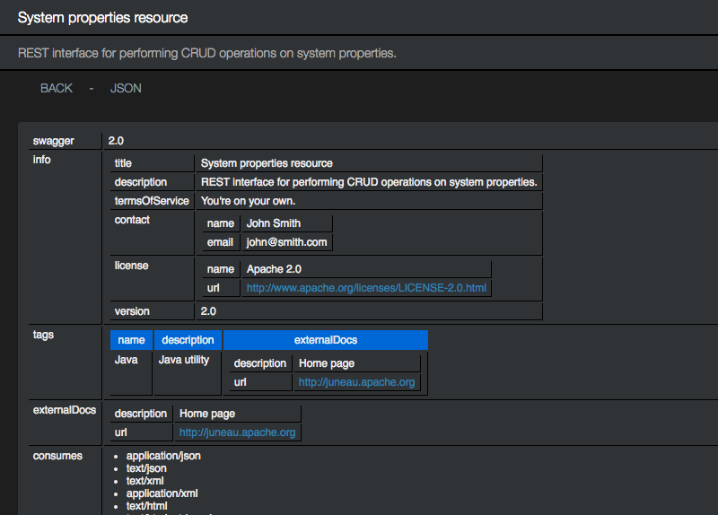

About
- A toolkit for marshalling POJOs to a wide variety of content types using a common framework.
- A REST server API for creating Swagger-based self-documenting REST interfaces using POJOs.
- A REST client API for interacting with REST interfaces using POJOs.
- A remote proxy API built on top of REST.
- A sophisticated INI config file API.
- A REST microservice API that combines all the features above for creating lightweight standalone REST interfaces that start up in milliseconds.
- JAX-RS integration support for all serializers and parsers.
Features
- Marshalling support for JSON (including variants), XML, HTML, URL-Encoding, UON (URL-Encoded Object Notation), MessagePack, RDF/XML, RDF/XML-Abbrev, N-Triple, Turtle, N3, SOAP/XML.
- Data Transfer Objects for Atom, Cognos, JSON-Schema, HTML 5, and Swagger 2.0. These can be serialized to any of the supported marshall types (e.g. ATOM/JSON).
Examples
Core library includes easy-to-use and customizable serializers and parsers. The examples here are only a small taste of what's possible.
Many examples are provided in the Javadocs.
The default serializers can often be used to serializers POJOs in a single line of code...
// A simple POJO class
public class Person {
public String name = "John Smith";
public int age = 21;
}
// Serialize a bean to JSON, XML, or HTML
Person p = new Person();
// Produces:
// "{name:'John Smith',age:21}"
String laxJson = JsonSerializer.DEFAULT_LAX.serialize(p);
// Produces:
// "{"name":"John Smith","age":21}"
String strictJson = JsonSerializer.DEFAULT.serialize(p);
// Produces:
// <object>
// <name>John Smith</name>
// <age>21</age>
// </object><
String xml = XmlSerializer.DEFAULT_SIMPLE.serialize(p);
// Produces:
// <table>
// <tr><td>name</td><td>John Smith</td></tr>
// <tr><td>age</td><td>21</td></tr>
// </table>
String html = HtmlSerializer.DEFAULT.serialize(p);
// Same as Html, but wraps it in HTML and BODY elements with page title/description/links:
String htmlDoc = HtmlDocSerializer.DEFAULT.serialize(p);
// Produces:
// name='John+Smith'&age=21
String urlEncoding = UrlEncodingSerializer.DEFAULT.serialize(p);
// Produces:
// (name='John Smith',age=21)
String uon = UonSerializer.DEFAULT.serialize(p);
// Produces:
// 82 A4 name AA 4A John Smith 68 A3 age 15
byte[] messagePack = MsgPackSerializer.DEFAULT.serialize(p);
// Produces:
// <rdf:RDF
// xmlns:rdf="http://www.w3.org/1999/02/22-rdf-syntax-ns#"
// xmlns:jp="http://www.apache.org/juneaubp/"
// xmlns:j="http://www.apache.org/juneau/">
// <rdf:Description>
// <jp:name>John Smith</jp:name>
// <jp:age>21</jp:age>
// </rdf:Description>
// </rdf:RDF>
String rdfXml = RdfSerializer.DEFAULT_XMLABBREV.serialize(p);
// Produces:
// @prefix jp: <http://www.apache.org/juneaubp/> .
// @prefix j: <http://www.apache.org/juneau/> .
// [] jp:age "21" ;
// jp:name "John Smith" .
String rdfN3 = RdfSerializer.DEFAULT_N3.serialize(p);
// Produces:
// _:A3bf53c85X3aX157cf407e2dX3aXX2dX7ffd <http://www.apache.org/juneaubp/name> "John Smith" .
// _:A3bf53c85X3aX157cf407e2dX3aXX2dX7ffd <http://www.apache.org/juneaubp/age> "21" .
String rdfNTriple = RdfSerializer.DEFAULT_NTRIPLE.serialize(p);
Parsing back into POJOs is equally simple for any of the supported languages shown above (JSON shown here)...
// Use one of the predefined parsers.
ReaderParser parser = JsonParser.DEFAULT;
// Parse a JSON object (creates a generic ObjectMap).
String json = "{name:'John Smith',age:21}";
Map m1 = parser.parse(json, Map.class);
// Parse a JSON string.
json = "'foobar'";
String s2 = parser.parse(json, String.class);
// Parse a JSON number as a Long or Float.
json = "123";
Long l3 = parser.parse(json, Long.class);
Float f3 = parser.parse(json, Float.class);
// Parse a JSON object as a bean.
json = "{name:'John Smith',age:21}";
Person p4 = parser.parse(json, Person.class);
// Parse a JSON object as a HashMap<String,Person>.
json = "{a:{name:'John Smith',age:21},b:{name:'Joe Smith',age:42}}";
Map<String,Person> m5 = parser.parse(json, HashMap.class, String.class, Person.class)
// Parse a JSON object as a HashMap<String,LinkedList<Person>>.
json = "{a:[{name:'John Smith',age:21},{name:'Joe Smith',age:42}]}";
Map<String,List<Person>> m6 = parser.parse(json, HashMap.class, String.class, LinkedList.class, Person.class)
// Parse a JSON array of integers as a Collection of Integers or int[] array.
json = "[1,2,3]";
List<Integer> l7 = parser.parse(json, LinkedList.class, Integer.class);
int[] i7 = parser.parse(json, int[].class);
// Parse arbitrary input into ObjectMap or ObjectList objects (similar to JSONObject/JSONArray but generalized for all languages).
json = "{name:'John Smith',age:21}";
ObjectMap m8a = parser.parse(json, ObjectMap.class);
int age = m8a.getInt("age");
ObjectMap m8b = (ObjectMap)parser.parse(json, Object.class); // Equivalent.
json = "[1,true,null]";
ObjectList l9a = parser.parse(json, ObjectList.class);
boolean b = l9a.getBoolean(1);
ObjectList l9b = (ObjectList)parser.parse(json, Object.class); // Equivalent.
Many POJOs such as primitives, beans, collections, arrays, and classes with various known constructors and methods are serializable out-of-the-box.
For other objects, "swaps" allow you to swap-in serializable replacement objects during serialization
and vis-versa during parsing. Beans can also be tailored in various ways.
See here for a list of supported POJO types.
Serializers can send output directly to Writers, OutputStreams, and Files.
Parsers can receive input directly from Readers, CharSequences, InputStreams, or Files.
SerializerGroup and ParserGroup classes allow serializers and parsers
to be retrieved by W3C-compliant HTTP Accept and Content-Type values...
// Construct a new serializer group with configuration parameters that get applied to all serializers.
SerializerGroup sg = new SerializerGroup()
.append(JsonSerializer.class, UrlEncodingSerializer.class);
.setUseWhitespace(true)
.addPojoSwaps(CalendarSwap.ISO8601DT.class);
// Find the appropriate serializer by Accept type and serialize our POJO to the specified writer.
sg.getSerializer("text/invalid, text/json;q=0.8, text/*;q:0.6, *\/*;q=0.0")
.serialize(myPersonObject, myWriter);
// Construct a new parser group with configuration parameters that get applied to all parsers.
ParserGroup pg = new ParserGroup()
.append(JsonSerializer.class, UrlEncodingSerializer.class);
.addPojoSwaps(CalendarSwap.ISO8601DT.class);
Person p = pg.getParser("text/json").parse(myReader, Person.class);
Data Transfer Object libraries are provided for a variety of languages that allow you to serialize commonly-used
documents.
HTML5 documents and fragments can be constructed using the HTML5 DTOs and HTML or XML serializers:
import static org.apache.juneau.dto.html5.HtmlBuilder.*;
Object myform =
form().action("/submit").method("POST")
.children(
"Position (1-10000): ", input("number").name("pos").value(1), br(),
"Limit (1-10000): ", input("number").name("limit").value(100), br(),
button("submit", "Submit"),
button("reset", "Reset")
);
String html = HtmlSerializer.DEFAULT.serialize(myform);
<form action='/submit' method='POST'>
Position (1-10000): <input name='pos' type='number' value='1'/><br/>
Limit (1-10000): <input name='pos' type='number' value='100'/><br/>
<button type='submit'>Submit</button>
<button type='reset'>Reset</button>
</form>
ATOM feeds can be constructed using the ATOM DTOs and XML serializer:
import static org.apache.juneau.dto.atom.AtomBuilder.*;
Feed feed =
feed("tag:juneau.apache.org", "Juneau ATOM specification", "2016-01-02T03:04:05Z")
.subtitle(text("html").text("Describes <em>stuff</em> about Juneau"))
.links(
link("alternate", "text/html", "http://juneau.apache.org/").hreflang("en"),
link("self", "application/atom+xml", "http://juneau.apache.org/feed.atom")
)
.rights("Copyright (c) 2016, Apache Foundation")
.entries(
entry("tag:juneau.sample.com,2013:1.2345", "Juneau ATOM specification snapshot", "2016-01-02T03:04:05Z")
.published("2016-01-02T03:04:05Z")
.content(
content("xhtml")
.lang("en")
.base("http://www.apache.org/")
.text("<div><p><i>[Update: Juneau supports ATOM.]</i></p></div>")
)
);
// Serialize to ATOM/XML
String atomXml = XmlSerializer.DEFAULT.serialize(feed);
<feed>
<id>
tag:juneau.apache.org
</id>
<link href='http://juneau.apache.org/' rel='alternate' type='text/html' hreflang='en'/>
<link href='http://juneau.apache.org/feed.atom' rel='self' type='application/atom+xml'/>
<rights>
Copyright (c) 2016, Apache Foundation
</rights>
<title type='text'>
Juneau ATOM specification
</title>
<updated>2016-01-02T03:04:05Z</updated>
<subtitle type='html'>
Describes <em>stuff</em> about Juneau
</subtitle>
<entry>
<id>
tag:juneau.apache.org
</id>
<title>
Juneau ATOM specification snapshot
</title>
<updated>2016-01-02T03:04:05Z</updated>
<content base='http://www.apache.org/' lang='en' type='xhtml'>
<div xmlns="http://www.w3.org/1999/xhtml"><p><i>[Update: Juneau supports ATOM.]</i></p></div>
</content>
<published>2016-01-02T03:04:05Z</published>
</entry>
</feed>
Swagger documents can be constructed using the Swagger DTOs and JSON serializer:
import static org.apache.juneau.dto.swagger.SwaggerBuilder.*;
Swagger swagger = swagger()
.swagger("2.0")
.info(
info("Swagger Petstore", "1.0.0")
.description("This is a sample server Petstore server.")
.termsOfService("http://swagger.io/terms/")
.contact(
contact().email("apiteam@swagger.io")
)
.license(
license("Apache 2.0").url("http://www.apache.org/licenses/LICENSE-2.0.html")
)
)
.path("/pet", "post",
operation()
.tags("pet")
.summary("Add a new pet to the store")
.description("")
.operationId("addPet")
.consumes(MediaType.JSON, MediaType.XML)
.produces(MediaType.JSON, MediaType.XML)
.parameters(
parameterInfo("body", "body")
.description("Pet object that needs to be added to the store")
.required(true)
)
.response(405, responseInfo("Invalid input"))
);
// Serialize to Swagger/JSON
String swaggerJson = JsonSerializer.DEFAULT_READABLE.serialize(swagger);
{
"swagger": "2.0",
"info": {
"title": "Swagger Petstore",
"description": "This is a sample server Petstore server.",
"version": "1.0.0",
"termsOfService": "http://swagger.io/terms/",
"contact": {
"email": "apiteam@swagger.io"
},
"license": {
"name": "Apache 2.0",
"url": "http://www.apache.org/licenses/LICENSE-2.0.html"
}
},
"paths": {
"/pet": {
"post": {
"tags": [
"pet"
],
"summary": "Add a new pet to the store",
"description": "",
"operationId": "addPet",
"consumes": [
"application/json",
"text/xml"
],
"produces": [
"application/json",
"text/xml"
],
"parameters": [
{
"in": "body",
"name": "body",
"description": "Pet object that needs to be added to the store",
"required": true
}
],
"responses": {
"405": {
"description": "Invalid input"
}
}
}
}
},
}
Note that these DTOs can also be serialized to any of the other supported languages such as JSON or MessagePack!
And they can be parsed back into their original objects!
The REST server API builds upon the SerializerGroup and ParserGroup classes
to provide annotated REST servlets that automatically negotiate the HTTP media types and allow the developer
to work with requests, responses, headers, path variables, query parameters, and form data as POJOs.
The end goal is to provide simple yet sophisticated REST interfaces that allow POJOs to be automatically represented as
different content types depending on whatever the particular need:
- HTML for viewing POJOs in easy-to-read format in a browser.
- JSON for interacting through Javascript.
- XML for interacting with other applications.
- RDF for interacting with triple stores.
- URL-Encoding for interacting through HTML forms.
- MessagePack for efficiently transmitting large amounts of data.
A simple example that supports all languages...
@RestResource(
path="/systemProperties",
title="System properties resource"
)
public class SystemPropertiesResource extends RestServletDefault {
@RestMethod(name="GET", path="/")
public Map getSystemProperties(@Query("sort") boolean sort) throws Throwable {
if (sort)
return new TreeMap(System.getProperties());
return System.getProperties();
}
@RestMethod(name="GET", path="/{propertyName}")
public String getSystemProperty(@Path String propertyName) throws Throwable {
return System.getProperty(propertyName);
}
@RestMethod(name="PUT", path="/{propertyName}")
public String setSystemProperty(@Path String propertyName, @Body String value) {
System.setProperty(propertyName, value);
return "OK";
}
@RestMethod(name="POST", path="/")
public String setSystemProperties(@Body java.util.Properties newProperties) {
System.setProperties(newProperties);
return "OK";
}
@RestMethod(name="DELETE", path="/{propertyName}")
public String deleteSystemProperty(@Path String propertyName) {
System.clearProperty(propertyName);
return "OK";
}
}
A more sophisticated example of the same resource using various features, including information
for fully populating the Swagger documentation, guards for restricting access to particular
methods, customizing supported content types and serialization options, adding g-zip compression,
and adding customized branding for the HTML views.
@RestResource(
path="/systemProperties",
title="System properties resource",
description="REST interface for performing CRUD operations on system properties.",
serializers={
HtmlDocSerializer.class,
JsonSerializer.class,
JsonSerializer.Simple.class,
XmlDocSerializer.class,
MsgPackSerializer.class
},
parsers={
JsonParser.class,
XmlParser.class,
HtmlParser.class,
MsgPackParser.class
},
properties={
@Property(name=SERIALIZER_quoteChar, value="'"),
@Property(name=HTMLDOC_links, value="{up:'$R{requestParentURI}',options:'$R{servletURI}?method=OPTIONS'}"),
},
stylesheet="styles/devops.css",
encoders=GzipEncoder.class,
contact="{name:'John Smith',email:'john@smith.com'}",
license="{name:'Apache 2.0',url:'http://www.apache.org/licenses/LICENSE-2.0.html'}",
version="2.0",
termsOfService="You're on your own.",
tags="[{name:'Java',description:'Java utility',externalDocs:{description:'Home page',url:'http://juneau.apache.org'}}]",
externalDocs="{description:'Home page',url:'http://juneau.apache.org'}"
)
public class SystemPropertiesResource extends RestServlet {
@RestMethod(
name="GET", path="/",
summary="Show all system properties",
description="Returns all system properties defined in the JVM.",
parameters={
@Parameter(in="query", name="sort", description="Sort results alphabetically.", _default="false")
},
responses={
@Response(value=200, description="Returns a map of key/value pairs.")
}
)
public Map getSystemProperties(@Query("sort") boolean sort) throws Throwable {
if (sort)
return new TreeMap(System.getProperties());
return System.getProperties();
}
@RestMethod(
name="GET", path="/{propertyName}",
summary="Get system property",
description="Returns the value of the specified system property.",
parameters={
@Parameter(in="path", name="propertyName", description="The system property name.")
},
responses={
@Response(value=200, description="The system property value, or null if not found.")
}
)
public String getSystemProperty(@Path String propertyName) throws Throwable {
return System.getProperty(propertyName);
}
@RestMethod(
name="PUT", path="/{propertyName}",
summary="Replace system property",
description="Sets a new value for the specified system property.",
guards=AdminGuard.class,
parameters={
@Parameter(in="path", name="propertyName", description="The system property name."),
@Parameter(in="body", description="The new system property value."),
},
responses={
@Response(value=302,
headers={
@Parameter(name="Location", description="The root URL of this resource.")
}
),
@Response(value=403, description="User is not an admin.")
}
)
public Redirect setSystemProperty(@Path String propertyName, @Body String value) {
System.setProperty(propertyName, value);
return new Redirect();
}
@RestMethod(
name="POST", path="/",
summary="Add an entire set of system properties",
description="Takes in a map of key/value pairs and creates a set of new system properties.",
guards=AdminGuard.class,
parameters={
@Parameter(in="path", name="propertyName", description="The system property key."),
@Parameter(in="body", description="The new system property values.", schema="{example:{key1:'val1',key2:123}}"),
},
responses={
@Response(value=302,
headers={
@Parameter(name="Location", description="The root URL of this resource.")
}
),
@Response(value=403, description="Unauthorized: User is not an admin.")
}
)
public Redirect setSystemProperties(@Body java.util.Properties newProperties) {
System.setProperties(newProperties);
return new Redirect();
}
@RestMethod(
name="DELETE", path="/{propertyName}",
summary="Delete system property",
description="Deletes the specified system property.",
guards=AdminGuard.class,
parameters={
@Parameter(in="path", name="propertyName", description="The system property name."),
},
responses={
@Response(value=302,
headers={
@Parameter(name="Location", description="The root URL of this resource.")
}
),
@Response(value=403, description="Unauthorized: User is not an admin")
}
)
public Redirect deleteSystemProperty(@Path String propertyName) {
System.clearProperty(propertyName);
return new Redirect();
}
@RestMethod(
name="OPTIONS", path="/*",
summary="Show resource options",
description="Show resource options as a Swagger doc"
)
public Swagger getOptions(RestRequest req) {
return req.getSwagger();
}
}
Auto-generated OPTIONS pages are constructed from Swagger DTO beans, here shown serialized as HTML...

The server API is based on JEE servlets, making them easy to deploy in any JEE environment.
Features include:
- Extremely simple debuggability using nothing more than your browser.
- Auto-generated localized Swagger-based OPTIONS pages from data provided through annotations (as above), resource bundles, or Swagger JSON files.
- Configurability through external INI files.
- Client-versioned responses (and other heuristic matching APIs).
- Servlet and method level guards.
- Automated error handling.
- Optional JAX-RS integration.
- much more!....
The REST client API allows you to access REST interfaces using POJOs...
// Create a reusable JSON client.
RestClient client = new RestClient(JsonSerializer.class, JsonParser.class);
// The address of the root resource.
String url = "http://localhost:10000/systemProperties";
// Do a REST GET against a remote REST interface and convert
// the response to an unstructured ObjectMap object.
Map m1 = client.doGet(url).getResponse(TreeMap.class);
// Add some new system properties.
// Use XML as the transport medium.
client = new RestClient(XmlSerializer.class, XmlParser.class);
Properties p = new Properties();
p.load(reader);
int returnCode = client.doPost(url + "/systemProperties", p).execute();
The remote proxy interface API allows you to invoke POJO methods using REST...
RestClient client = new RestClient(JsonSerializer.class, JsonParser.class)
.setRemoteableUriServletUrl("https://localhost:9443/jazz/remote");
// Execute a method on the server.
IAddressBook ab = client.getRemoteableProxy(IAddressBook.class);
ab.createPerson(...);
Since the remote proxy API is built on top of REST, it can be debugged using nothing more than a browser.
The config file API allows you to interact with INI files using POJOs.
A sophisticated variable language is provided for referencing environment variables, system properties, other config file entries, and a host of other types.
#--------------------------
# My section
#--------------------------
[MySection]
# An integer
anInt = 1
# A boolean
aBoolean = true
# An int array
anIntArray = 1,2,3
# A POJO that can be converted from a String
aURL = http://foo
# A POJO that can be converted from JSON
aBean = {foo:'bar',baz:123}
# A system property
locale = $S{java.locale, en_US}
# An environment variable
path = $E{PATH, unknown}
# A manifest file entry
mainClass = $MF{Main-Class}
# Another value in this config file
sameAsAnInt = $C{MySection/anInt}
# A command-line argument in the form "myarg=foo"
myArg = $ARG{myarg}
# The first command-line argument
firstArg = $ARG{0}
# Look for system property, or env var if that doesn't exist, or command-line arg if that doesn't exist.
nested = $S{mySystemProperty,$E{MY_ENV_VAR,$ARG{0}}}
# A POJO with embedded variables
aBean2 = {foo:'$ARG{0}',baz:$C{MySection/anInt}}
// Load our config file
ConfigFile f = ConfigMgr.DEFAULT.get("MyIniFile.cfg");
int anInt = cf.getInt("MySection/anInt");
boolean aBoolean = cf.getBoolean("MySection/aBoolean");
int[] anIntArray = cf.getObject(int[].class, "MySection/anIntArray");
URL aURL = cf.getObject(URL.class, "MySection/aURL");
MyBean aBean = cf.getObject(MyBean.class, "MySection/aBean");
Locale locale = cf.getObject(Locale.class, "MySection/locale");
String path = cf.getString("MySection/path");
String mainClass = cf.getString("MySection/mainClass");
int sameAsAnInt = cf.getInt("MySection/sameAsAnInt");
String myArg = cf.getString("MySection/myArg");
String firstArg = cf.getString("MySection/firstArg");
The microservice API combines all the features above with a built-in Jetty server to produce a lightweight
REST service packaged as two simple files:
- An executable jar file that starts up a REST interface in milliseconds.
- An external INI file that can be used to configure your REST resources on the fly.
The microservice API was originally designed for and particularly suited for use as Docker images.
More information
All user documentation for this project is maintained in its Javadocs.
The top-level Overview document is a good
starting point for developers wishing to get up-to-speed quickly.
Any questions about the project should be asked via email to dev@juneau.apache.org.